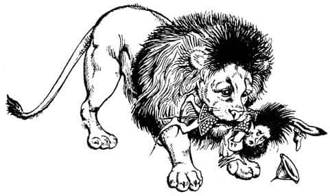
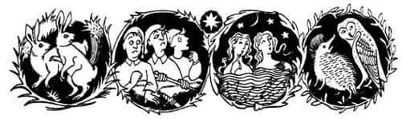
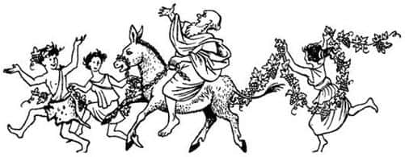

Aslan Kükrüyor
Sonunda tüm ekip uyandığında, Lucy hikâyesini dördüncü kez anlatmak zorunda kaldı. Hikâyenin ardından gelen derin sessizlik, alabildiğine cesaret kırıcıydı.
“Ben bir şey göremiyorum” dedi Peter gözleri ağrıyana kadar baktıktan sonra. “Sen görebiliyor musun Susan?”
“Hayır, elbette göremiyorum” diye patladı Susan. “Çünkü görülecek bir şey yok. Lucy rüya görmüş. Yat ve uyumaya çalış Lucy.”
“Umudum o ki” dedi Lucy titrek bir sesle, “hepiniz benimle gelirsiniz. Çünkü – çünkü gelseniz de gelmeseniz de onunla gitmek zorundayım.”
“Saçmalama Lucy” dedi Susan. “Tek başına gidemezsin herhalde. Ona izin verme Peter. Düpedüz haylazlık yapmak istiyor.”
“Gitmesi gerekiyorsa, ben de onunla giderim” dedi Edmund. “Daha önce haklı çıkmıştı.”
“Biliyorum çıktı” dedi Peter. “Belki bu sabah da haklıydı. Boğazdan aşağı gitmek kesinlikle yanlıştı. Ama gecenin bu saatinde de olmaz ki. Peki, Aslan niçin bize görünmüyor? Hiç öyle yapmamıştı. Bu onun yapacağı bir şey değil. S.K.D. ne diyor buna?”
“Yoo, ben hiçbir şey söylemeyeceğim” diye cevapladı cüce. “Hepiniz giderseniz, kuşkusuz ben de sizinle geleceğim. Yok, eğer ayrılırsanız ben Yüce Kral ile giderim. Ona ve Kral Caspian’a olan sorumluluğum bunu gerektiriyor. Kişisel fikrime gelince, birinin gündüz bulamadığı yolu geceleyin bulma şansının fazla olmadığına inanan basit bir cüceyim ben. Dahası, büyülü sözler eden ama benimle konuşmayan; dost ama bize yardımı dokunmayan; koskoca, ama kimsenin göremediği aslanların bana yararı yok. Anladığım kadarıyla hepsi palavra.”
“Acele etmemiz için pençesini yere vuruyor” dedi Lucy. “Hemen gitmemiz gerek. En azından benim.”
“Bizleri böyle zorlamaya hiç hakkın yok. Dörde biriz ve üstelik en küçüğümüz de sensin” dedi Susan.
“Hadi, saçmalama” diye azarladı Edmund. “Gitmezsek merak içinde kalırız.” Sonuna kadar Lucy’yi desteklemek niyetindeydi, ama uykusundan olması canını sıkmıştı, bu yüzden suratını asarak intikam almaya çalışıyordu.
Peter yorgun hareketlerle miğferini giyip, kolunu kalkanının kayışlarına sokarken, “Öyleyse yola koyulalım” dedi. Başka bir zaman olsaydı morali bozulan çok sevgili kız kardeşi Lucy’nin gönlünü almaya çalışırdı, çünkü her ne olursa olsun, bunun, onun hatası olmadığını biliyordu. Yine de ona biraz kızgınlık duymaktan alamıyordu kendini.
En kötümser olan Susan’dı. “Diyelim ki ben de Lucy gibi davranmaya başladım” dedi, “siz gitseniz de gitmeseniz de, ben burada kalmakla tehdit edebilirim sizi. Ve sanırım edeceğim de.”
“Yüce Kral’a itaat edin Majesteleri” dedi Yaygaracı, “ve yola çıkalım. Madem uyumama izin verilmiyor, burada durup konuşmaktansa yürümeyi tercih ederim.”
Ve sonunda yola koyuldular. En önde yürüyen Lucy, Susan’ın söylediklerine karşılık vermemek için kendini tutuyor, dudaklarını ısırıyordu. Fakat gözleri Aslan’a takılınca bunları unuttu. Aslan döndü ve yaklaşık otuz metre önlerinde ağır adımlarla ilerlemeye başladı. Grubu yönlendiren sadece Lucy’nin tarifleriydi, çünkü Aslan onlar için sadece görünmez değil, aynı zamanda duyulmazdı da. İri bir kedininkine benzeyen pençeleri çimlerde hiç ses çıkarmıyordu.
Aslan onları dans eden ağaçların sağına ve boğazın yakınlarına doğru yöneltti. Ağaçların hâlâ dans edip etmediğini kimse bilmiyordu, çünkü Lucy’nin gözleri Aslan’da, diğerlerinin gözleri de Lucy’deydi. “Çakıllar ve çaydanlıklar!” diye düşündü Yaygaracı. “Umarım ayışığında yaptığımız bu çılgınca tırmanış sonucu boynumuzu kırmayız.” Aslan uzunca bir süre sarp kayalıkların tepesinde yürüdü. Sonra uçurumun kenarında boy atmış küçük ağaçların bulunduğu bir yere geldiler. Aslan dönüp ağaçların arasında kayboldu. Lucy nefesini tuttu; galiba Aslan kayalıklardan aşağı atlamıştı. Onu gözden kaybetmemek için öyle bir çaba harcıyordu ki, durup düşünecek zamanı yoktu, adımlarını hızlandırdı. Biraz sonra ağaçların arasındaydı. Aşağıya baktı. Kayalar arasından, yana doğru ilerleyip boğaza inen dar ve dik bir patika gördü. Aslan aşağıya iniyordu. Aslan başını çevirip mutlu bir ifadeyle ona baktı. Lucy ellerini çırptı ve onu izleyerek inmeye başladı. Diğerleri arkasından bağırıyordu: “Hey! Lucy! N’olur dikkat et. Boğazın tam kenarındasın. Geri dön!” hemen sonra Edmund’un, “Hayır, o haklı. Aşağıya bir yol var” dediğini duydu.
Edmund yarı yolda ona yetişti.
“Bak!” dedi büyük bir heyecanla. “Bak! Önümüzde ilerleyen şu gölge de ne?”
“Bu onun gölgesi” dedi Lucy.
“Haklı olduğunu biliyordum Lu” dedi Edmund. “Onu daha önce neden göremediğimi bilemiyorum. İyi ama kendisi nerede?”
“Tabii ki gölgesiyle birlikte. Göremiyor musun?”
“Şey, bir an için, sanki gördüğümü sanmıştım. Öylesine kötü bir ışık var ki.”
Arkada, yukarılarda bir yerden, “Devam et Kral Edmund, devam et” diye bağıran Yaygaracı’nın sesi geldi. Hemen sonra daha gerilerden, hatta tepeden Peter’in sesi duyuldu: “Ah, kıpırda Susan. Ver elini bana. Bir bebek bile buradan inebilir. Hem şikâyet etmeyi de kes artık.” Birkaç dakika içinde vadinin dibine inmişlerdi. Gürüldeyen suların sesi kulaklarını dolduruyordu. Aslan, bir kedi gibi özenle, taştan taşa basarak nehrin öbür yanına geçiyordu. Ortada durdu, su içmek için eğildi, sular damlayan kaba tüylü başını kaldırırken yüzünü onlara doğru çevirdi. Bu kez Edmund onu görmüştü. “Ah, Aslan!” diye bağırdı ileri atılarak. Ancak Aslan arkasını dönüp sessizce Azgın Nehir’in öte yakasındaki yokuşu tırmanmaya başladı.
“Peter, Peter” diye bağırdı Edmund. “Gördün mü?”
“Bir şey gördüm” dedi Peter. “Ah bu ayışığı, öylesine oyuncu ki – ama devam edelim. Haydi, Lucy için üç kere, hurra! Üzerimde yorgunluktan eser kalmadı.”
Aslan duraksamadan onları sol yana, boğazın yukarısına doğru götürdü. Bu yolculuk bütünüyle tuhaf bir rüya gibiydi – gürüldeyen nehir, ıslak ve gri otlar, yaklaşmakta oldukları parıltılı kayalıklar ve hep önlerinde sessizce yürüyen muhteşem hayvan – Susan ve Cüce dışında herkes onu görebiliyordu artık.
Biraz sonra ilerideki kayalıkların ön yüzünde bir başka dik patikaya geldiler. Burası az önce indikleri patikadan çok daha sarptı. Bitmek tükenmek bilmeyen zikzaklarla yukarıya doğru ilerliyordu. Şansları vardı, ay, boğazın tam tepesindeydi ve her iki yakayı da aydınlatıyordu.
Lucy, Aslan’ın kuyruğu ve arka ayakları tepenin üzerinde kaybolduğu sırada, terk edildiklerini sanmıştı. Ancak titreyen bacaklarıyla Aslan’ın arkasından tırmandı ve nefes nefese, Billursu’dan ayrıldıklarından beri ulaşmaya çalıştıkları tepeye geldiklerini gördü. Uzun ve hafif bir yokuş, (ayışığında bembeyaz parlayan birkaç kaya parçası, otlar ve çalılar) yaklaşık yarım mil ötede ağaçların parıldadığı yere kadar uzanıyordu. Lucy artık emindi. Burası Taş Masa’nın bulunduğu tepeydi.
Diğerleri zincir zırhlarının şıkırtısıyla arkasından geldiler. Aslan önlerinden sanki kayarak gidiyor, onlar da arkasından yürüyordu.
“Lucy” dedi Susan çok hafif bir sesle.
“Evet” dedi Lucy.
“Şimdi onu görebiliyorum, özür dilerim.”
“Önemli değil.”
“Gerçekten çok kötüyüm ben. Dün, onun orada olduğuna inanmıştım. Bizi köknar ormanına gitmememiz için uyardığında, bizi bu gece uyandırdığında, onu gördüğüne inanıyordum. Demek istiyorum ki içten içe inanıyordum, ya da kendimle hesaplaşsaydım inanabilirdim. Ama ben hemen ormandan çıkmak istiyordum – ah bilmiyorum. Şimdi ona ne söyleyeceğim?”
“Belki de bir şey söylemene gerek yoktur” dedi Lucy.
Çok geçmeden ağaçlara ulaştılar. Çocuklar ağaçların arasından, onlardan sonra yapılmış olan büyük kümbeti, Aslan’ın Kümbeti’ni görebiliyorlardı.
“Bizimkiler pek iyi nöbet tutmuyorlar” diye mırıldandı Yaygaracı. “Bizi durdurmaları gerekirdi.”
“Şşşş!” dedi diğer dördü. Aslan yüzünü onlara dönmüştü. Öylesine heybetliydi ki, korkuyla sevinç arası duygular içindeydiler. Oğlanlar ileri çıktı, Lucy onlara yol açtı. Susan ve Cüce geride bir yere sinmişlerdi.
“Aslan” dedi Kral Peter, bir dizinin üzerine çöküp Aslan’ın ağır pençesini yüzüne doğru kaldırarak. “Öyle mutluyum ve öyle üzgünüm ki. Başından beri onları kötü yönettim, özellikle dün sabah.”
“Canım oğlum!” dedi Aslan.
Sonra döndü ve Edmund’u buyur etti. Tek söylediği, “Aferin” oldu. Sıkıntılı bir bekleyişten sonra derin bir sesle, “Susan” dedi. Susan hiç cevap vermedi. Diğerleri onun ağladığını sandılar.
“Korkularına teslim oldun, çocuk” dedi Aslan. “Gel, soluğumu hisset. Unut onları, şimdi cesur musun?”
“Evet, Aslan” dedi Susan.
“Evet, şimdi” dedi Aslan, kükreme belirtisi taşıyan bir sesle. Kuyruğunu bedeninin iki tarafına vuruyordu. “Evet, şimdi, aslanlara inanmayan ünlü okçu ve kılıç ustası o küçük Cüce nerede? Gel buraya toprağın oğlu, gel BURAYA!” Son sözcük kükreme belirtisi değil, düpedüz kükremeydi.
“Hayaletler ve enkazlar!” diye yutkundu Yaygaracı titrek bir sesle. Çocuklar Aslan’ın kükremesinden tedirgin olmamışlardı. Onu iyi tanıyorlardı, Cüce’yi çok sevdiğini anlamışlardı. Ancak bizim Aslan bir yana, daha önce hiç aslan görmemiş olan Yaygaracı farklı düşünüyordu. Elinden gelen tek akıllıca hareketi yaptı – fırlayıp kaçacağı yerde, sendeleyerek Aslan’a doğru yürüdü.
Aslan Cüce’nin üstüne atıldı. Yavrusunu ağzında taşıyan bir anne kedi gördünüz mü hiç? Aynen öyleydi. Zavallı küçük cüce kamburlaşmış, top gibi olmuş bir halde Aslan’ın ağzında sallanıyordu. Aslan onu şöyle bir salladı. Cüce’nin zırhları bir kalaycı çantası gibi şıkırdadı ve sonra – hoppa! Cüce havaya uçtu. Güvendeydi ama o bunu bilmiyordu. Aşağıya düşerken, kadife pençeler, bir annenin kolları kadar nazik, onu yakaladı ve (başı yukarıda olmak üzere) yere koydu.

“Toprağın oğlu, dost olacak mıyız?” diye sordu Aslan.
“E – ve – he – he – het” dedi Cüce nefes nefese. Henüz kendini kontrol edemiyordu.
“Şimdi” dedi Aslan. “Arkanıza bakın; şafak söküyor. Kaybedecek zamanımız yok. Siz üçünüz, siz Âdemoğulları ve toprağın oğlu, çabucak kümbete gidin ve orada ne gerekiyorsa yapın.”
Cüce’nin dili tutulmuştu. Oğlanlar Aslan’a, onları takip edip etmeyeceğini sorma cesareti gösteremediler. Üçü birden kılıçlarını çekip selam verdiler ve sonra dönerek şıngırtılar eşliğinde, alacakaranlıkta kayboldular. Lucy yüzlerinde yorgunluk belirtisi olmadığını fark etmişti. Yüce Kral ve Kral Edmund birer çocuktan çok, yetişkin birer adama benziyorlardı.
Kızlar Aslan’ın yanı başında durup, gözden kaybolana kadar onlara baktılar. Hava aydınlanmaktaydı. Doğuda, ufka yakın bir yerde Narnia’nın sabah yıldızı Aravir küçük bir ay gibi parlıyordu. Eskisinden daha büyük görünen Aslan, başını kaldırdı, yelesini salladı ve kükredi.
Başlangıçta nazikçe çalınan bir orgun ezgisi gibi, derin ve hırıltıyla çıkan ses, yer gök sallanana kadar giderek güçlendi. O tepeden yükselip tüm Narnia’ya yayıldı. Aşağıda Miraz’ın kampında adamlar uyandı, beti benzi atmış bir halde birbirlerine baktılar ve silahlarına sarıldılar. Aşağılarda, şimdi en soğuk saatlerini yaşamakta olan nehirden su perilerinin başları ve omuzları, nehir tanrısının yosun sakallı koca başı yükseldi. Onun ötesinde, her tarlada ve ağaçlıkta kulakları her an tetikte tavşanlar deliklerinden fırladı, kuşların uykulu kafaları kanatlarının altından çıktı, baykuşlar öttü, tilkiler uludu, kirpiler homurdandı ve ağaçlar kıpırdadı. Kasabalarda ve köylerde anneler korkulu gözlerle bebeklerini bağırlarına bastı. Köpekler havladı ve erkekler el yordamıyla ışık bulmak üzere yataklarından sıçradı. Uzaklarda, kuzey cephesindeki dağlarda devler, kalelerinin karanlık kapılarından dışarı baktı.

Lucy ve Susan’ın gördüğü ilk şey, tepelerin üzerinde, hemen her yönden, karanlık bir şeylerin onlara doğru geldiğiydi. Önceleri yerde ağır ağır ilerleyen kara bir örtü gibi görünüyorlardı, sonra kapkara bir denizin yaklaştıkça büyüyen dalgalarına benzediler ve en sonunda ne oldukları anlaşıldı: Hareket eden ağaçlar! Dünyanın tüm ağaçları sanki Aslan’a doğru koşuyordu. Ancak yakınlaştıkça, ağaçtan çok başka bir şeye benziyorlardı. Eğilen, selam veren, ince uzun kollarını Aslan’a sallayan kalabalık etrafını sarınca Lucy, onların insana benzeyen şekiller olduğunu gördü. Aslan’ı görebilmek için huş kızlar başlarını geriye atıyor, söğüt kadınlar düşünceli yüzlerini saçlarından kurtarıyordu. Kraliçeye benzeyen kayınlar sessizce dikilip hayranlıkla onu izliyorlardı. Kaba saçlı meşe adamlar, zayıf ve melankolik karaağaçlar, dağınık saçlı çobanpüskülleri (kendileri kapkara, fakat kadınları meyveleriyle kıpkırmızı) ve güzel üvez ağaçlarının hepsi bir eğilip bir kalkarak, güçlü, cırtlak ya da hışırtılı sesleriyle “Aslan, Aslan!” diye bağırıyorlardı.
Aslan’ın etrafındaki dans (çünkü bir kez daha dansa başlamışlardı) hızlanıyordu ve kalabalık öyle bir büyüyordu ki Lucy şaşırdı, çünkü ağaçların arasında hoplayıp zıplayan insanların nereden geldiğini görememişti. Biri, bir çocuktu. Elbisesi geyik derisindendi. Kıvırcık saçlarını çevreleyen, asma yapraklarından yapılmış bir taç takmıştı. Eğer yüzü aşırı derecede yabani görünmeseydi, bir oğlan için fazlasıyla yakışıklıydı. Birkaç gün sonra onu gördüğünde Edmund’un da söyleyeceği gibi, “her şeyi yapabilecek, kesinlikle her şeyi yapabilecek bir delikanlı”ydı. Bir sürü ismi var gibi görünüyordu – Bromios, Bassareus ve Ram bunlardan sadece üçüydü. Yanında kendisi kadar yabani bir sürü kız vardı. Hatta, umulmadık bir şekilde, eşeğe binmiş biri bile vardı. Herkes gülüyor ve bağırıyordu, “Euan, euan, eu-oy-oy-oy.”

“Bu bir oyun mu Aslan?” diye bağırdı çocuk. Oyun olduğu açıktı. Fakat hemen herkes oynanan oyun hakkında farklı şeyler düşünüyordu. Belki saklambaçtı, ancak Lucy ebenin kim olduğunu asla öğrenemedi. Körebeye daha çok benziyordu fakat herkes ebe gibi davranıyordu. Terlik avı oyununa da benziyordu ama terlik asla bulunamıyordu. İşleri daha da karıştıran şey, eşeğe binmiş olağanüstü şişman, yaşlı adamın aniden, “İçki! Şimdi içki zamanıdır” diye bağırırken eşekten düşmesi oldu. Diğerleri, sanki tüm olanlar bir sirk gösterisiymiş gibi, onu arka ayakları üstünde yürüyerek gösteri yapmak isteyen eşeğin sırtına geri koymak istediler. Zaman ilerledikçe etrafta daha çok asma yaprağı görünmeye başladı. Çok geçmeden asmaların dalları ortaya çıktı ve her yere tırmanmaya başladı. Asmalar ağaç topluluğunun ayaklarından yukarı doğru tırmanıyor, boyunlarına dolanıyorlardı. Lucy elini kaldırıp saçlarını geriye itmek istediğinde asma dallarını itmekte olduğunun farkına vardı. Şimdi eşek de bir asma yumağıyla kaplıydı. Kuyruğu bütünüyle asmalar tarafından sarmalanmıştı. Kulaklarının arasından kara bir cisim sallanıyordu. Lucy yeniden baktığında bunun bir üzüm salkımı olduğunu gördü. O andan itibaren her yerde üzümler görülmeye başladı – baştan aşağı her yer üzümlerle kaplanmıştı.
“İçki! İçki!” diye bir nara attı yaşlı adam. Herkes üzüm yemeye başladı. Sizin oralardaki bağları bilemem, ama hayatınız boyunca böyle üzüm yemediğinize eminim. Sert, kütür kütür fakat çiğnediğinizde ağızda hoş bir tat bırakan mükemmel üzümlerdi. Kızlar daha önce hiç böyle bir şey yememişlerdi. Burada istediğiniz kadar üzüm vardı. Sofra görgüsüne de gerek yoktu. Her yerde yapış yapış, boyanmış parmaklar görülüyordu. Ağızlar dolu olmasına rağmen kahkahalar, Euan, euan-oy-oy-oy bağırtıları eksik olmuyordu. Aniden herkes oyunun (ne oyunuysa) ve ziyafetin bitmesi gerektiğini hissetti. Kalabalık eğlenceyi bırakıp dinlemek üzere nefes nefese Aslan’a döndü. Tanyeri ağarmaktaydı. Lucy aklına gelenleri Susan’ın kulağına fısıldadı:
“Su, onların kim olduğunu biliyorum.”
“Kim?”
“Yaban yüzlü çocuk Baküs, eşekteki yaşlı adam da Silenus. Uzun zaman önce Bay Tumnus onlardan söz etmişti, hatırlamıyor musun?”
“Evet, kuşkusuz. Fakat bence, Lu—”
“Ne?”
“Baküs ve tüm o yabani kızlarla karşılaştığımızda Aslan yanımızda olmasaydı, kendimi pek güvende hissetmezdim doğrusu.”
“Senden de bu beklenirdi” dedi Lucy.